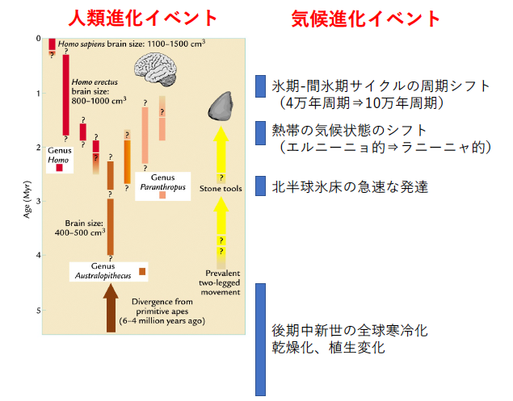

5. 気候変動と人類進化、文明との関係

人類進化(Ruddiman, 2013)と気候進化
人類の進化や文明の盛衰の原因を探る研究は、従来は考古学や文化人類学的観点からのアプローチが主流でしたが、近年はその背後には気候変動が大きく関与していたとする説が盛んに議論されるようになり、人類の進化や文明の盛衰を考える上で、新たな大きなうねりとなりつつあります。
例えば、人類の進化史においても特に重要なイベントには必ず大きな気候進化が伴っていたことがわかりつつあります。また多くの古代文明の繁榮や衰退は安定した水資源の供給や突然の旱魃などの気候変動が主因である可能性が指摘されつつあります。こうした新たな視点によって、人類の進化や文明史を捉え直そうという動きが国内外で起こっています。
今後は単に純粋な気候科学だけでなく、文理融合系の学際的な研究にも貢献していきたいと考えています。